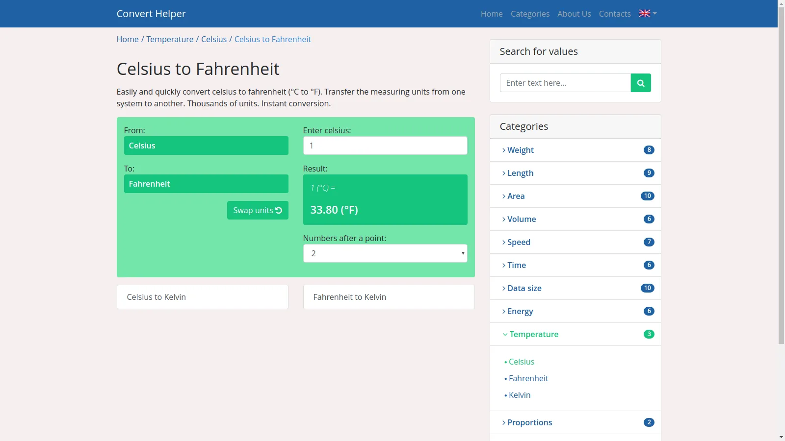
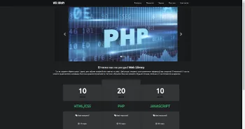
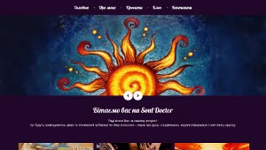
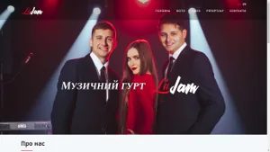
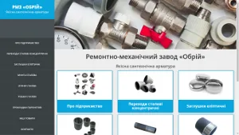

Про мене
- Senior backend-розробник з досвідом 10+ років у масштабованих веб-додатках та мікросервісах.
- Магістр комп'ютерних технологій, ТНПУ ім. В. Гнатюка (2010 - 2015).
- QA Engineer у bStream (бер 2016 - січ 2017).
- PHP Developer у bStream (лют 2017 - чер 2018).
- Middle PHP Developer у Netpeak (чер 2018 - чер 2023).
- Senior PHP / Go Developer у GameInspire (EvoPlay) (сер 2023 - дотепер).
Професійні навички:
- Architecture: microservices, event-driven systems, REST API design, high-load backend services;
- Languages: PHP, Go, JavaScript;
- Frameworks: Symfony, Laravel, Vue.js, Node.js;
- Databases: PostgreSQL, MongoDB, MySQL;
- Infrastructure: Docker, Kubernetes, Linux;
- CI/CD: Jenkins, GitLab;
- Messaging & Caching: RabbitMQ, Redis;
- Search: Elasticsearch;
- Testing: PHPUnit, Selenium, Codeception;
- Tools: Git, Nginx, Apache;
Мої проекти
maki.te.ua

Фотостудія - Maki Art
weblib.com.ua


Освітній портал - Web Library
souldoctor.org.ua


Блог - Soul Doctor
lajam.com.ua


Музична група - LaJam
obriy.com.ua

